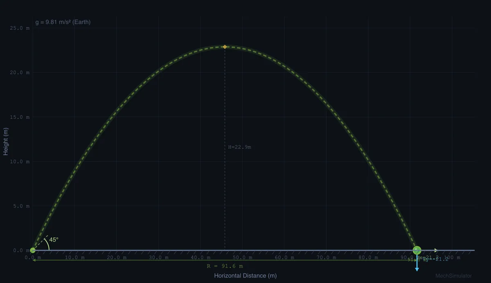

Understanding Projectile Motion — Free Interactive Simulator

Projectile motion describes an object moving through the air under gravity alone, tracing a parabolic path. This free simulator lets you launch projectiles at any angle and speed, then computes range, maximum height, and time of flight from the standard kinematic equations, with optional air resistance and lunar or Martian gravity.
What is the range formula for projectile motion?
For a projectile launched from ground level with initial velocity v at angle θ, the horizontal range is R = v²·sin(2θ) / g. The maximum range on flat ground occurs at 45°, because sin(2×45°) = 1. Complementary angles such as 30° and 60° produce the same range but with different heights — the lower angle gives a flatter, faster path and the higher angle a taller, slower arc.
Key Projectile Motion Equations (Featured Snippet)
| Quantity | Formula (SI) | Symbol & Unit |
|---|---|---|
| Range (ground launch) | R = v²·sin(2θ) / g | R, m |
| Maximum height | H = v²·sin²(θ) / (2g) | H, m |
| Time of flight (ground) | T = 2v·sin(θ) / g | T, s |
| Time to peak | tp = v·sin(θ) / g | tp, s |
| Horizontal velocity | Vx = v·cos(θ) | Vx, m/s |
| Vertical velocity | Vy = v·sin(θ) − g·t | Vy, m/s |
| Impact speed (from height) | vf = √(v² + 2gh) | vf, m/s |
| Drag force (with air) | Fd = ½·Cd·ρ·A·v² | Fd, N |
How do you calculate maximum height and time of flight?
The maximum height reached by a projectile is H = v²·sin²(θ) / (2g). At this point, the vertical velocity component becomes zero while the horizontal component continues unchanged. The time of flight for a ground-level launch is T = 2v·sin(θ) / g. When launching from height h, the time of flight increases because the projectile has farther to fall, and the range increases accordingly.
Why are horizontal and vertical motion independent?
The horizontal velocity Vx = v·cos(θ) remains constant throughout the flight (in the absence of air resistance), while the vertical velocity Vy = v·sin(θ) − gt changes linearly due to gravitational acceleration. Because gravity acts only vertically, the two motions evolve independently — a bullet fired horizontally and one dropped from the same height strike the ground at exactly the same time. The impact velocity follows from the Pythagorean theorem on the final velocity components.
How does air resistance change the trajectory?
In reality, air resistance (drag) significantly affects projectile trajectories. The drag force Fd = ½·Cd·ρ·A·v² acts opposite to the velocity vector, reducing both range and maximum height while breaking the symmetry of the parabolic path. The optimal launch angle shifts below 45° when drag is present. This simulator lets you toggle air resistance on and off to compare ideal and realistic trajectories side by side.
The 45-Degree Myth — What Textbooks Get Right and Wrong
Every physics textbook tells you the same thing. Maximum range on flat ground happens at 45°. That part is true. The trouble is, in real life almost nothing is launched from flat ground in still air with zero drag, so the 45° answer is right for almost nothing you actually care about.
Three situations break the rule in ways worth pausing on:
- Launching from height. A javelin thrown from shoulder height (~1.8 m) gets its maximum range at about 41−43°, not 45°. The extra fall time at lower angles lets the horizontal component do more work. Run the simulator at v = 28 m/s, h = 1.8 m. Compare 45° and 42°. Range at 42° wins by about 0.5 m.
- Air drag. Once drag matters, the optimum drifts downward. For a baseball (m = 0.145 kg, exit speed 45 m/s) the best launch angle is closer to 35°. Major league hitters know this intuitively. Their fastest hits come off the bat between 25° and 35°, not at the textbook 45°.
- Landing higher or lower than launch. A discus thrown at the Olympics releases from about 1.5 m and lands at ground level. Optimum is closer to 35°. A basketball shot from 2.1 m at a 3.05 m hoop is the opposite. Best release angles cluster around 50−55° depending on shooting distance.
So when a student asks me “is 45° really the best?”, the honest answer is: only in the idealised problem. Beyond the textbook, every real projectile lives in a corrected regime where geometry, drag, and launch height all shift the optimum.
A Worked Example to Sanity-Check the Simulator
Pick a stone launched from ground level at 25 m/s and 30°. Take g = 9.81 m/s², no air drag. Before you read on, predict the range. Most students guess too high.
| Quantity | Calculation | Result |
|---|---|---|
| Horizontal launch velocity Vx | 25·cos30° = 25·0.866 | 21.65 m/s |
| Vertical launch velocity Vy | 25·sin30° = 25·0.5 | 12.5 m/s |
| Time to peak (Vy = 0) | Vy/g = 12.5/9.81 | 1.27 s |
| Total flight time T | 2·1.27 | 2.55 s |
| Maximum height H | Vy²/(2g) = 156.25/19.62 | 7.96 m |
| Range R | Vx·T = 21.65·2.55 | 55.2 m |
| Range shortcut | v²sin(2θ)/g = 625·sin60°/9.81 | 55.2 m ✓ |
That stone goes about as far as a tennis court is long. Not 100 metres, not 200. Worth keeping in mind when a problem asks for the range of a 30 m/s shot from a hand catapult.
Three Things Students Get Wrong, Every Year
Marking projectile-motion problems for a few years gives you a feel for the standard traps. These three appear over and over:
- Confusing velocity components. A surprising number of students write “range = v·t” using the full launch speed instead of the horizontal component. The horizontal component is v·cosθ, and it is the only part that moves the projectile sideways.
- Forgetting that 30° and 60° have the same range. Both give sin(2θ) = sin60° = 0.866, so on flat ground their ranges match. The high arc takes longer and goes higher; the low arc gets there faster and stays lower. Same horizontal distance.
- Mixing up signs in the air-drag formula. Drag opposes velocity. On the way up it slows the rise; on the way down it slows the fall. The trajectory becomes asymmetric: the downslope is steeper and shorter than the upslope, breaking the parabola.
Where Projectile Motion Actually Lives in Engineering
- Sports biomechanics. Coaches use the projectile equations (with drag and spin) to optimise release angles for shot put, javelin, golf, and basketball. The numbers I cited above for baseball come from MIT Sports Lab work in the early 2010s.
- Artillery fire control. Modern self-propelled howitzers compute trajectories in real time, accounting for wind, air density, projectile drag coefficient, and Coriolis effect for ranges beyond about 20 km. The basic skeleton is still v, θ, g, but with corrections layered on top.
- Mining and quarry blasting. Predicting where rock fragments will land after a controlled blast uses projectile motion to set safety perimeters. Fragments behave roughly ballistically once they leave the muck pile.
- Spacecraft re-entry. A re-entering capsule is initially a projectile inside the upper atmosphere. The aero-thermal heating analysis still references the launch angle of the entry trajectory, even though the equations now include drag, lift, and atmospheric density variation.
Books I Reach for When Teaching This
- Halliday, Resnick & Walker — Fundamentals of Physics, 11th ed., Chapter 4 (Motion in Two and Three Dimensions). The standard treatment, and the place to send a confused student.
- Adair, R. K. — The Physics of Baseball, 3rd ed., HarperCollins. A short, witty book that does the air-drag corrections properly. Worth reading even if you have no interest in baseball.
- McGinnis, P. M. — Biomechanics of Sport and Exercise, 3rd ed. Chapter on projectile motion handles all four common launch-height geometries.
How do I use this projectile motion simulator?
In Simulate mode, adjust angle, velocity, and height using sliders or steppers, then press Shoot to watch the projectile trace its trajectory. Switch between Earth, Moon, and Mars gravity, toggle Air Resistance, or flip to Imperial units. Open Show Calculations for a step-by-step derivation in SI. Use Explore mode for 12 concept cards, Practice for unlimited random problems, and Quiz for 5-question timed assessments.
Explore Related Simulators
If you found this Projectile Motion simulator helpful, explore our Escape Velocity simulator, Newton’s Laws simulator, Friction simulator, aerodynamics simulator, and the Collision & Momentum simulator for what happens when two moving bodies meet.